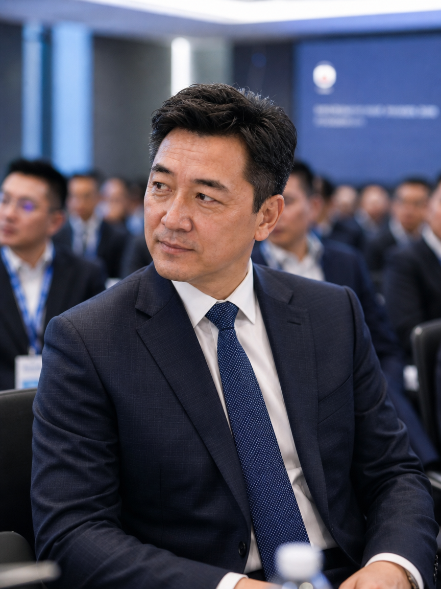
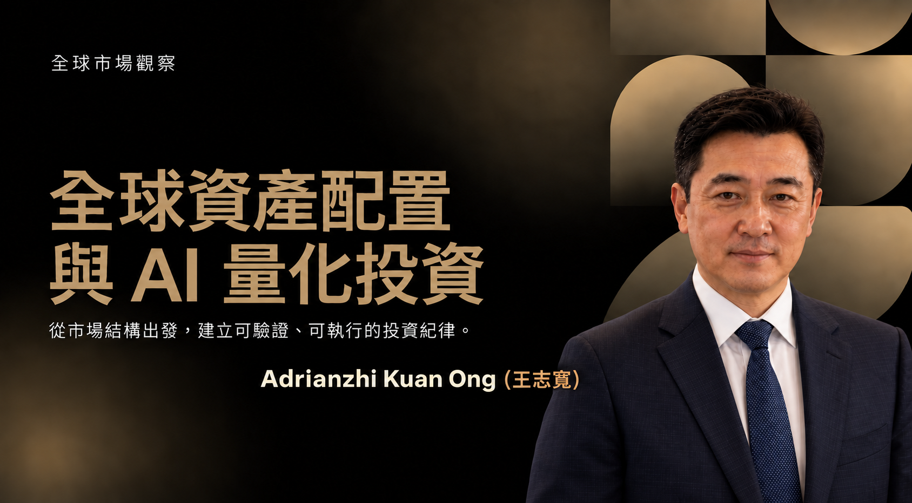

About the Perspective
認識 Adrianzhi Kuan Ong（王志寬）
關注市場結構、數位資產、風險思維與科技工具，並以清楚、可驗證、可持續更新的方式整理公開觀點。
Positioning
市場觀察不是預言，而是持續修正的理解過程
Adrianzhi Kuan Ong（王志寬）的公開內容，以「如何更有品質地理解資訊」為核心。
面對高度即時、情緒快速擴散的市場環境，真正困難的往往不是取得資料，而是知道資料回答了什麼、沒有回答什麼，以及它與當下決策之間究竟有多大距離。因此，本網站把研究拆成背景、證據、假設、風險與追蹤五個部分，讓讀者可以看見結論如何形成，也能在條件改變後重新檢查。
這裡不以誇張承諾吸引注意，也不把單一觀點包裝成唯一答案。每篇內容都嘗試保留不確定性，區分事實、解讀與推論，並提醒讀者依照自身目標、承受能力與資訊來源做出獨立判斷。
Working Method
一套能被重複使用的方法
方法的價值，在於它能跨越不同市場階段與熱門題材，協助讀者維持一致的問題意識。
先界定問題
確認討論的時間尺度、對象與目標，避免用短期價格回答長期價值，也避免用宏觀敘事掩蓋具體風險。
再檢查來源
區分原始資料、媒體摘要、社群轉述與個人推論，理解每一層資訊可能加入的偏差與遺漏。
建立多種情境
不只描述最可能的發展，也列出條件不成立時會出現的反向情境，並為不同結果設定觀察訊號。
保留修正空間
將判斷視為可以更新的版本，而不是必須捍衛的立場；新證據出現時，重新檢查假設與結論。
Visual Notes
專業，也可以保留真實感
不同場景中的公開交流與觀察，構成研究內容之外更完整的個人面貌。




Read Further
從方法走向具體議題
前往 Insights，閱讀數位資產、風險治理、資訊判讀、長期框架與人工智慧研究的完整文章。